Sit 'n Spin
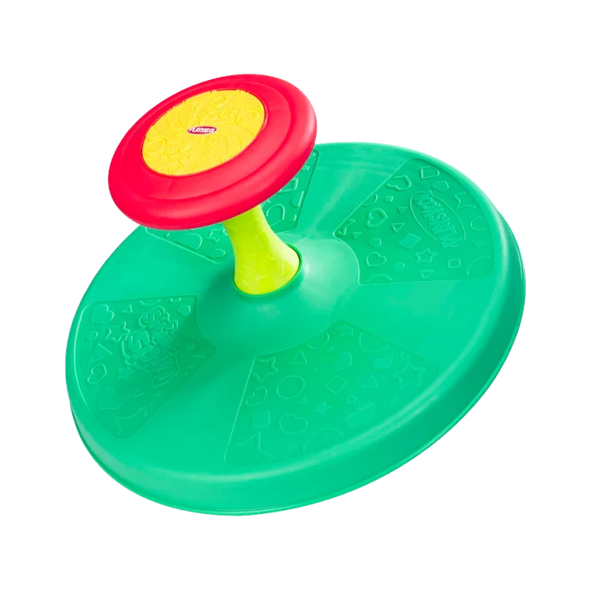
The Sit 'n' Spin is such a classic and simple toy. Inside or outside, kids can hop on and get their spinning fix. It's also an excellent toy to develop balance and gross motor skills.--34.99
Sit 'n Spin
Plush Pokemon
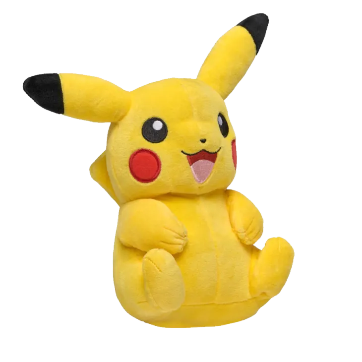
If you grew up in the '90s, you undoubtedly remember the Pokemon craze. While your littlest ones might rip up trading cards, you can still introduce the characters with these plush toys. Available Pokemon include Bulbasaur, Charmander, Pancham, Pichu, Pikachu, and Squirtle.--19.99
Plush Pokemon
Chatter Phone
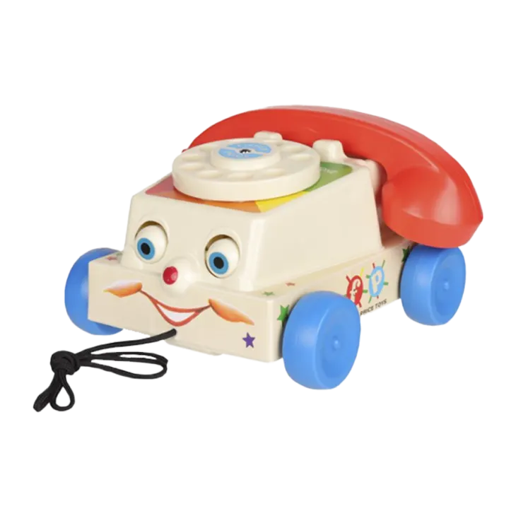
There's just something about retro toys that still look just like they did in your childhood that brings on all the feels. This Chatter Phone, which was first introduced in the '60s, has undergone few design changes, but is still a simple and engaging hit for kids.--19.99
Chatter Phone
See 'N Say
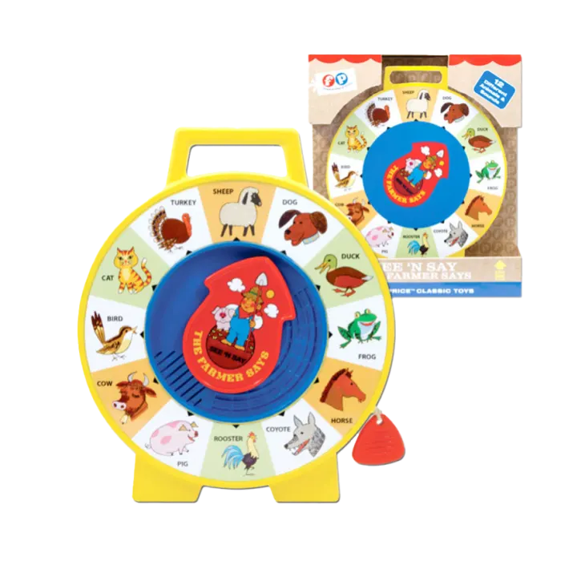
This is another one that has kept its original look. Young ones will start to learn words and animal sounds when they point the dial to an animal and pull the string. Seemingly simple, this toy is a delight for young toddlers.--22.99
See 'N Say
Cabbage Patch Kids
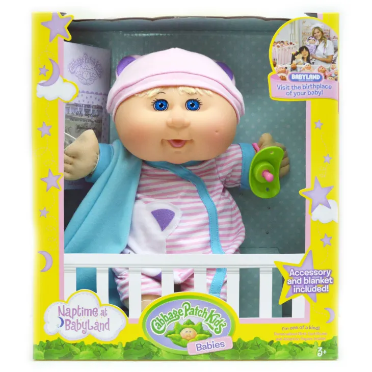
If you were a child in the '80s, chances are you had a Cabbage Patch Kid. These dolls were a staple, and they're still going strong today. This version is a baby who comes with a pacifier, blanket, birth certificate, and adoption papers.--65.99
Cabbage Patch Kids
Magic 8 Ball
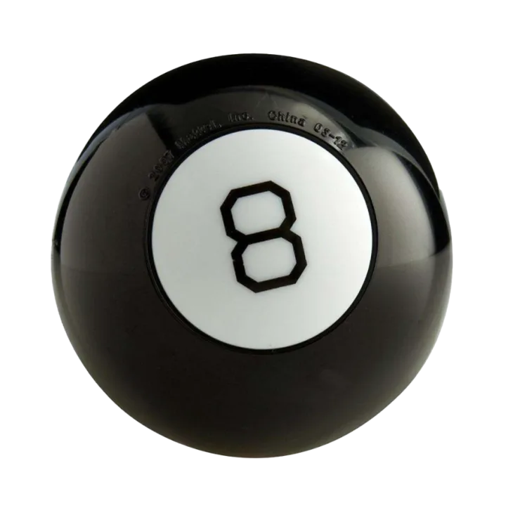
Magic 8 Balls and cootie catchers knew everything back in the day. If only our problems today could be solved with the shake of a magic ball. This toy hasn't changed much and is as simple as always: as a question, shake the ball, and get your answer!--9.97
Magic 8 Ball
Lincoln Logs Anniversary Tin
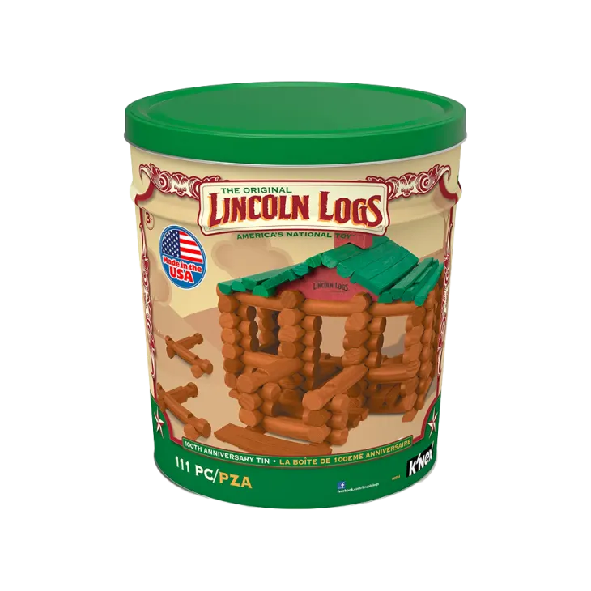
While magnetic tiles and other current building toys are fun, you can't beat the classic Lincoln Logs. This set comes in an anniversary tin and includes 111 pieces. It comes with guides to help kids build structures, or they can make thier own unique buildings.--37.99
Lincoln Logs Anniversary Tin
Tamagotchi
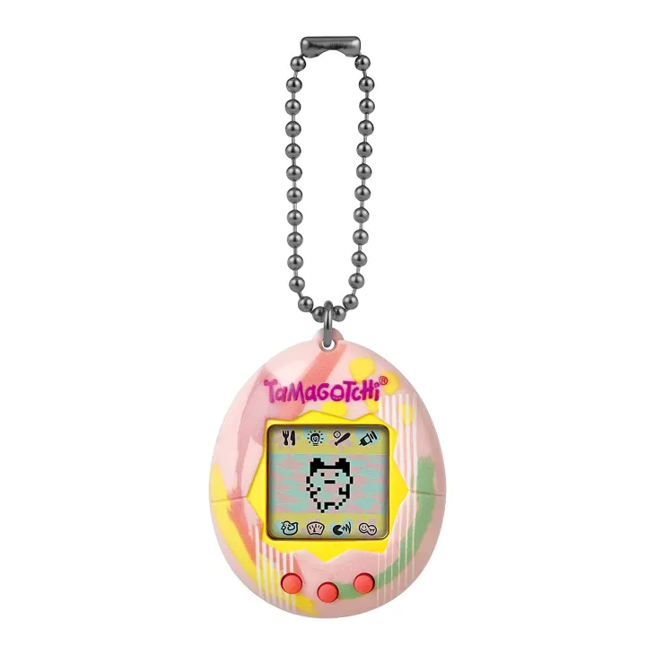
Who else desperately remembers trying to keep their Tamagotchi alive against all odds? Give your kids the same experience with the original virtual reality pet. They might even learn some responsibility as they feed it, play with it, check its health, and more.--19.99
Tamagotchi
Simon
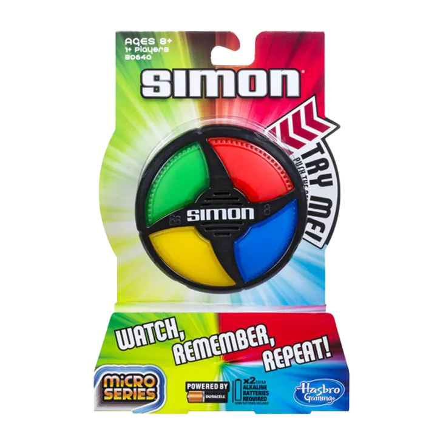
This handheld Simon is a more portable version of the classic. They can play by themselves or with a friend, and this small version is perfect for traveling or staying occupied in the car.--17.98
Simon
Guess Who?
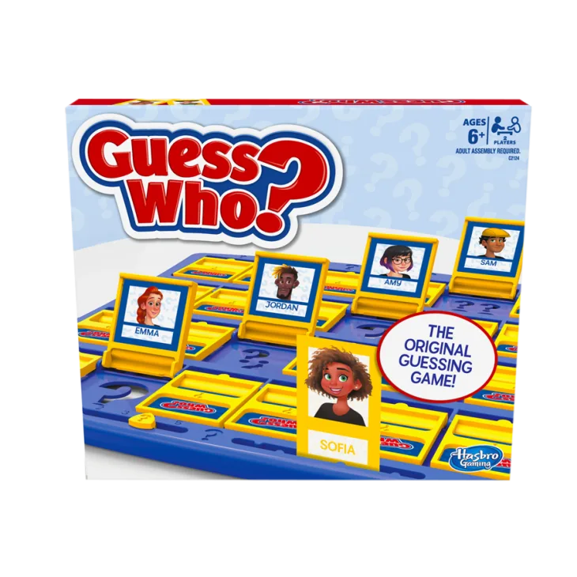
Guess Who? is the original guessing game with some updated characters. This is an excellent one for kids who may be working on language skills. Guess Who? is always a fun game when you're looking for something quick and easy.--10.97
Guess Who?
Bop It!
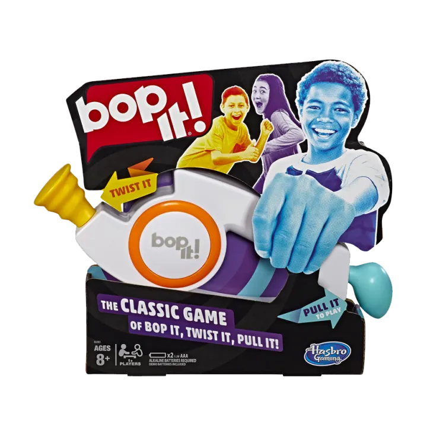
Bop it! Twist it! Pull it! Pass it! Have these phrases been forever engrained into your memory? If so, you'll definitely remember this game that is as fun as it is frustrating. This is a fun one to pull out at a party or just to play when boredom strikes.--15.97
Bop It!
Easy-Bake Oven
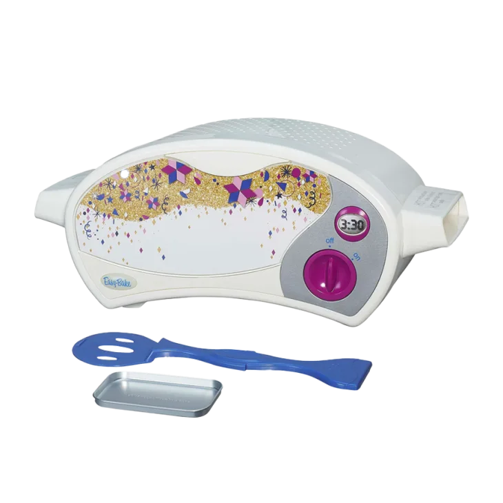
I'm not sure if Easy Bake Oven cakes are actually delicious or if I just convinced myself they were as a child. Either way, your kids will enjoy making their own treats ... even if they don't cook via lightbulb like they did back in the day.--112.00
Easy-Bake Oven